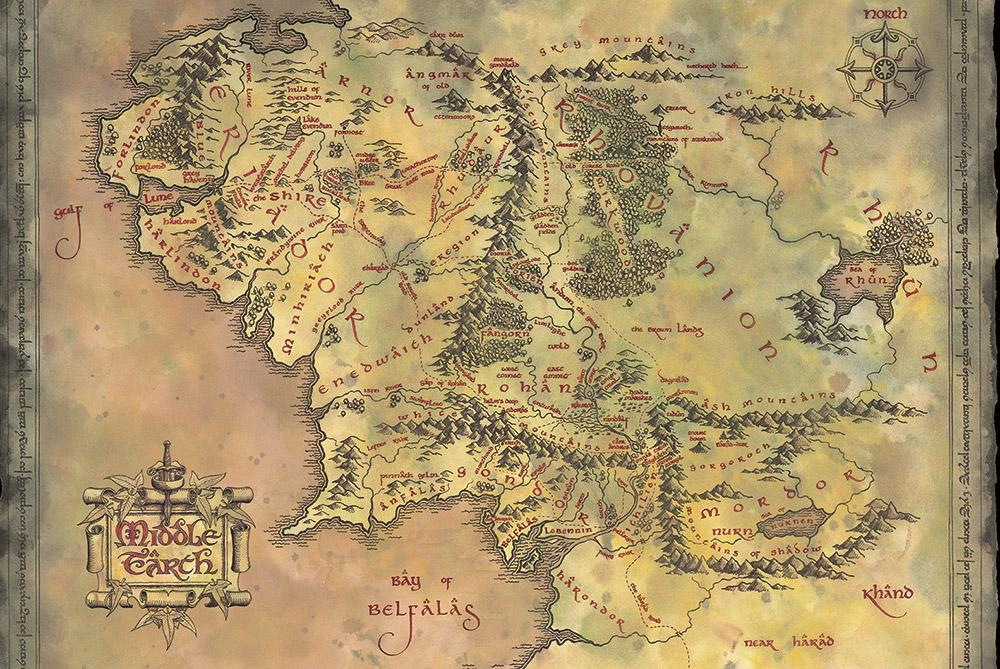
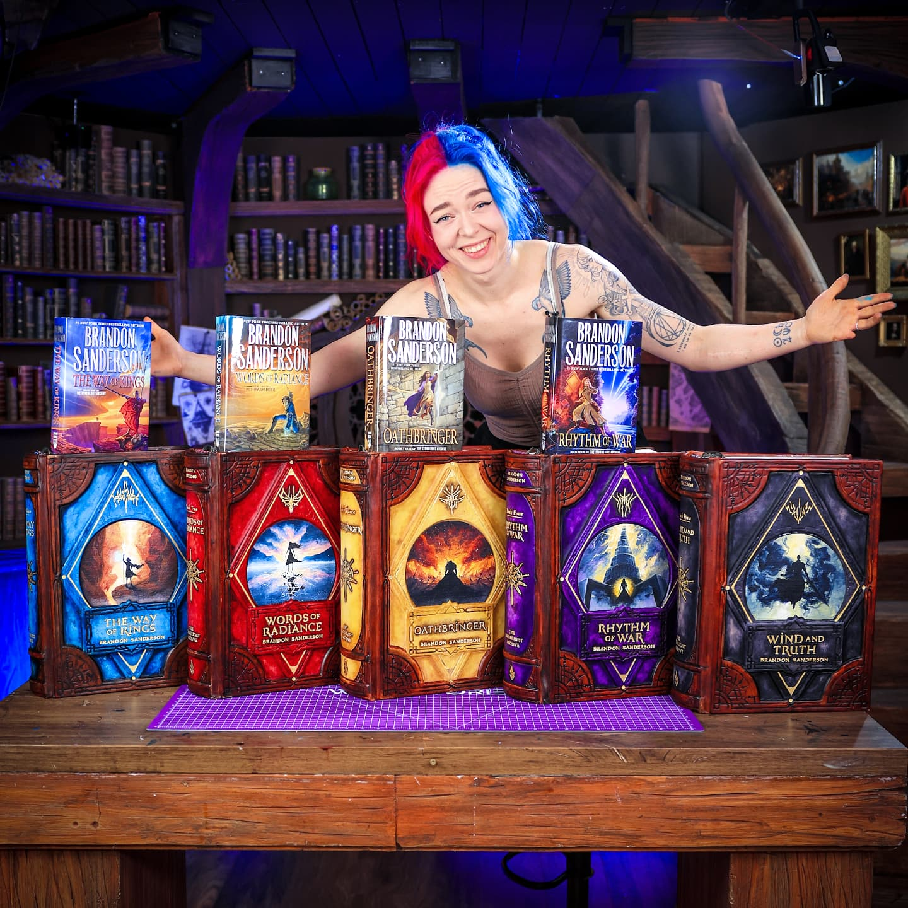

Фентезі впливає на сучасну культуру.
Ігри, фільми, комікси базуються на книгах.
Жанр продовжує розвиватися.
Ось мапа світу, створеного Толкіним:
Нові автори продовжують традиції.
Брендон Сандерсон з серією "Штормовий архів".
Епічні історії з унікальною магією.
Фентезі – це втеча від реальності.
Читачі знаходять натхнення в героях.
Жанр вічний.